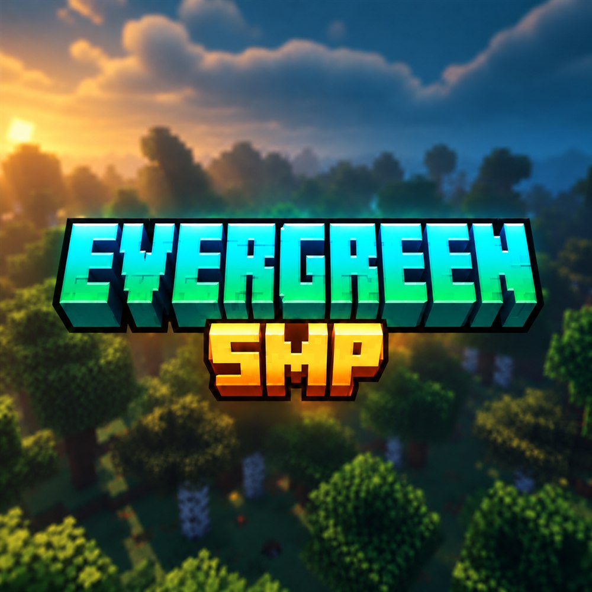

새로운 문명, 함께하는 마을
익숙한 기본 지형에서 새로운 터전을 시작하거나, 함께할 마을에 합류해 보세요.
JAVA + BEDROCK · 26.3
혼자 터전을 일구거나, 다른 플레이어와 마을을 이루고 함께 성장해 보세요.
전쟁·약탈·경쟁의 부담 없이 친구, 가족과 편하게 탐험하고 건축하는 EVERGREEN SMP입니다.

WATCH EVERGREEN
EVERGREEN SMP의 분위기를 홍보 영상으로 확인해 보세요.
LIVE ON EVERGREEN
— / —명
01 / ABOUT
새로 열린 마인크래프트 기본 야생 월드에서 나만의 터전을 일구거나 다른 플레이어의 마을에 합류해 보세요. 싸움보다 건축과 탐험, 함께 마을을 가꾸고 성장하는 재미에 집중했습니다.
익숙한 기본 지형에서 새로운 터전을 시작하거나, 함께할 마을에 합류해 보세요.
개인 토지와 건축물, 상자를 보호하고 훼손 기록도 되돌릴 수 있습니다.
욕설·광고·도배를 자동 차단해 어린이도 안심하고 이용할 수 있습니다.
화이트리스트 없이 Java와 Bedrock 어디서든 바로 시작할 수 있습니다.
매일 오전 7시부터 오후 11시까지 운영합니다.
주말·공휴일·방학·연휴에는 서버장 재량으로 연장 운영할 수 있습니다.
02 / RULES
공정하게 즐겨주세요.
다른 사람의 상자와 건축물을 존중해 주세요.
욕설 없이 서로 기분 좋게 대화해 주세요.
어린이도 함께 이용하는 서버입니다.
03 / LAND CLAIM
황금 삽으로 두 모서리를 선택하면 간단하게 내 땅을 만들 수 있습니다.
/claim wand
토지 선택용 황금 삽을 받습니다.
보호할 땅의 첫 지점을 좌클릭하고 반대쪽 지점을 우클릭합니다.
/claim create <이름>
예: /claim create 우리집 — 선택한 구역의 보호가 시작됩니다.
/claim trust <닉네임>친구에게 건축 권한 주기/claim menu상자·문·건축 권한과 보호 설정 관리/claim info현재 서 있는 보호 구역 확인/claim show내 땅의 경계 다시 보기선택 영역은 최소 5×5이며, 현재 1인당 총 10,000블록까지 보호할 수 있습니다.
05 / JOIN NOW
아래 버튼을 누르면 접속 주소가 바로 복사됩니다.
SUPPORT EVERGREEN
마인리스트와 마인스퀘어에서 서버 소식을 확인하고 추천할 수 있어요.